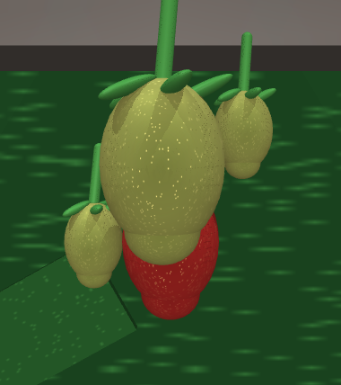

The field logs
One shift of harvester-01 in gutter row G3. Every attempt writes a line. Nine are ordinary; one is not, and it is selected below.
Incident · selected
The photo, as a simulation
The photo is measured and turned into a scene a physics engine can run.

The failure, reproduced with the current code
The robot works the simulated cluster exactly as it works any gutter, and fails the way it failed in the field.
The fix, written by an AI agent
An AI agent was given the field report, a copy of the robot's code, and one command that runs this simulation and the smoke tests. Below: what it changed, why, and the simulation before and after.
Why it changed the code — the agent's explanation
What it changed
What the agent said while it worked
The simulation, before and after
Smoke test
A fix for one awkward cluster must not break ordinary picking.
Pull request, sent for review
The change goes out as a pull request, and a reviewer is asked to look at it.